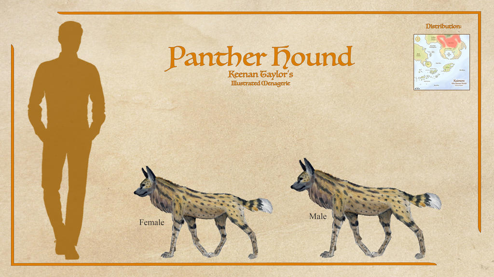
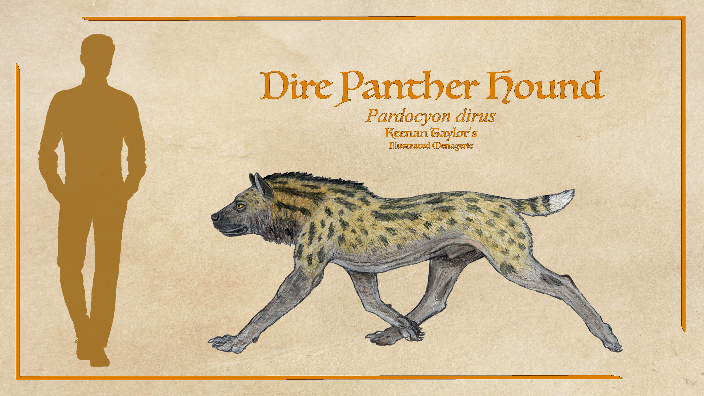
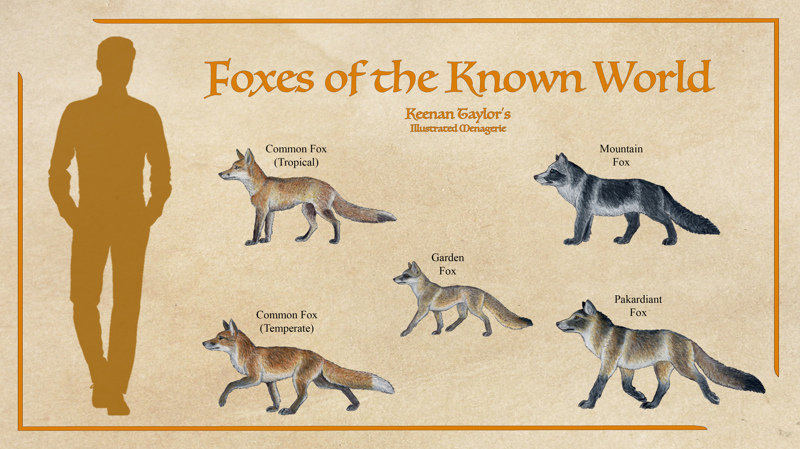
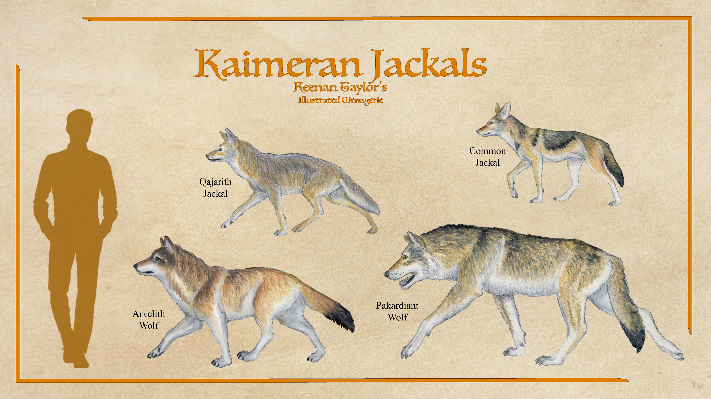
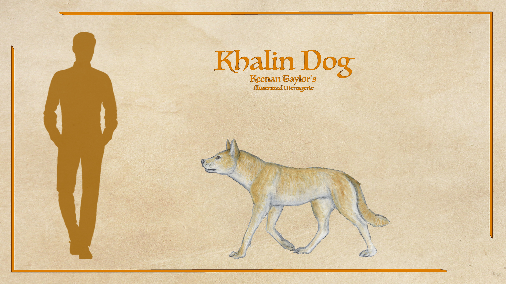
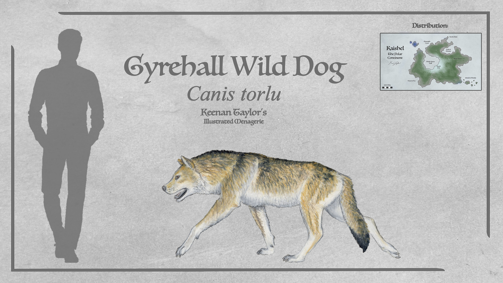
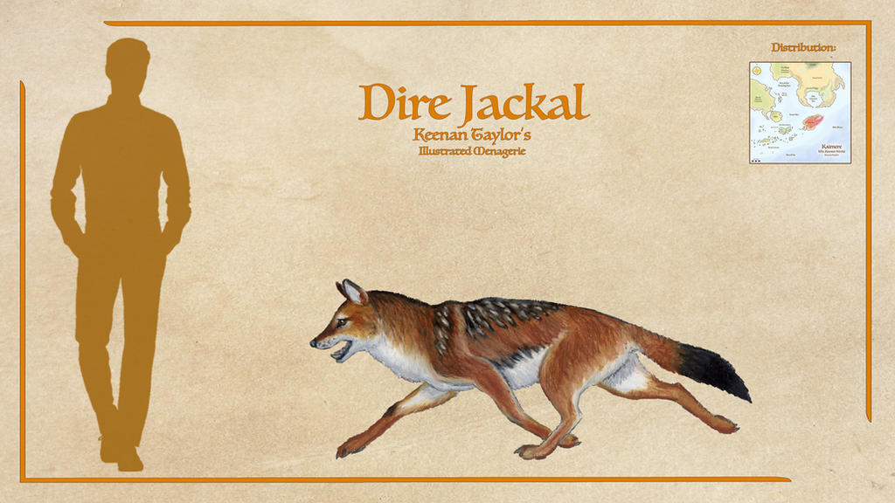
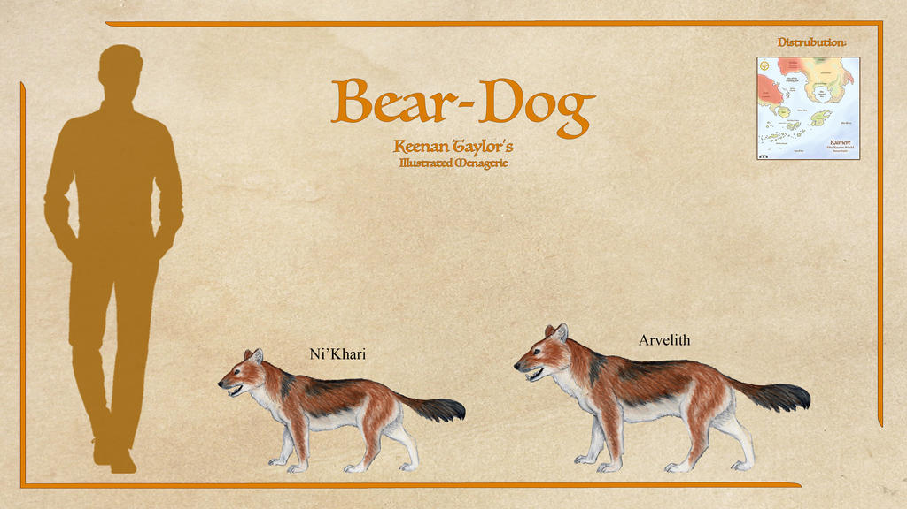

Scientific Classification
| Kingdom | Animalia | Animalia | Animalia |
|---|---|---|---|
| Phylum | Chordata | Chorda | Corded |
| Class | Mammalia | Mammālis | Of the Breast |
| Subclass | Theria | θηρῐ́ον | Wild Beasts |
| Infraclass | Placentalia | Placentālis | Placental |
| Magnorder | Boreoeutheria | Βορέᾱς + ἐΰς + θηρῐ́ον | True Northern Beasts |
| Grandorder | Ferungulata | Ferus + Ungulātus | Wild Beasts and Ungulates |
| Order | Carnivora | Carō + Vorāre | Flesh Eating |
| Suborder | Caniformia | Canis + fōrmis | Dog Forms |
| Infraorder | Cynoidea | κῠ́ων | Dogs |
| Family | Canidae | Canis | Dog |
Taxonomic note: Canidae belongs to the order Carnivora, within the mammalian class Mammalia. The family is traditionally divided into several major evolutionary lineages, although the composition and relationships of those lineages have changed as new fossil evidence and genetic analyses have become available. Kaimere's canid classification is complicated by repeated introductions. Animals assigned to the same broad family may have entered the planet millions of years apart, while superficially similar predators may belong to distinct evolutionary lineages. In particular, the bear-dog-like predators associated with dhole-derived lineages should not automatically be treated as members of Canidae merely because of their resemblance to large dogs. Their precise placement depends on their ancestry rather than their ecological role or appearance.
01 · INTRODUCTION
Overview
The canids of Kaimere comprise a diverse assemblage of introduced and subsequently evolved carnivorous mammals whose ecological roles have been shaped by repeated introductions, competition with native predators, and the unusual evolutionary history of the Known World. Although dogs are among the most widespread domesticated animals in Kaimeran civilization, wild canids occupy a comparatively restricted range of ecological niches across much of the planet. Unlike wolves in many terrestrial ecosystems on Earth, most wild canids of the Known World are not dominant predators. Instead, they persist primarily as small-game hunters, omnivores, scavengers, and specialized predators adapted to environments where larger carnivores already occupy the most productive hunting niches.
This pattern is not simply the result of human settlement or habitat disturbance. Kaimere supports an unusually competitive predator community in which large theropods, cockatrices, terror birds, hyenas, and other predatory mammals restrict the opportunities available to cursorial mammalian carnivores. Large social predators resembling the wolves of Earth are consequently uncommon across much of the Known World. The most successful wild canids tend to avoid direct competition by remaining relatively small, exploiting varied food sources, inhabiting colder or more isolated regions, or specializing in prey that larger predators generally overlook.
The hyenas are particularly important in determining the distribution and ecology of Kaimere's wild dogs. Descended from populations that migrated to Kairul approximately ten million years ago, common hyenas eventually returned to the Known World around 250,000 years ago. Their powerful jaws, endurance, intelligence, and flexible social organization allowed them to occupy many of the large, ground-running predator niches that might otherwise have supported wolves or other large canids. Their expansion displaced or restricted several earlier predators, including large borophagine dogs and Homotherium in some regions. As a result, most canids in the Known World evolved toward smaller-bodied or more specialized ways of life.
Foxes are the most widespread and successful wild canids in the region. Their adaptability allows them to exploit forests, grasslands, wetlands, scrublands, mountains, and landscapes altered by Kaimeran settlement. Common foxes have displaced or marginalized several smaller endemic mammals, while the garden fox has reduced direct competition through its climbing and arboreal habits. Mountain foxes occupy colder uplands, and the larger Pakardiant fox thrives through an unusually omnivorous diet. Together, these forms demonstrate the importance of ecological flexibility in the evolutionary success of Kaimere's canids.
The jackals and wolf-like canids form another major component of the fauna. Their evolutionary history is complicated by multiple Pleistocene introductions and extensive hybridization between different ancestral populations. The resulting animals range from small, predominantly solitary hunters of rodents and other small prey to large, social hypercarnivores capable of occupying apex-predator roles in particular environments. Their size, social behavior, and ecological importance vary considerably between regions, reflecting differences in climate and competition.
Other canid lineages occupy more specialized niches. Dholes introduced from Asia developed into several forms, including the largely solitary, omnivorous bear-dogs of the Titan Gardens and the Pakardiant dire jackal, a predator whose former dominance in the lowlands was undermined by the arrival of larger canids. The etekan represents a particularly unusual evolutionary branch: a highly derived, anteater-like canid specialized in feeding on social insects. Meanwhile, the borophagine panther hounds demonstrate that even relatively small members of an ancient predatory lineage can become formidable pursuit hunters when their hunting strategy and social behavior suit the local environment.
Domesticated dogs have a much more conspicuous relationship with Kaimeran societies than most wild canids. They serve as hunting companions, guardians, livestock protectors, food animals, messengers, and working animals aboard ships. Their breeds vary considerably between cultures, from the massive Pakardiant wolfhound and Akanuk whale hound to the small medicine dogs of the southern peoples. Many modern dogs descend primarily from wolves domesticated in the Khalin Islands, while later introductions from Earth contributed additional ancestry. Feral dogs have also become significant invasive predators in some regions, particularly on islands and along the coasts, where they have devastated populations of native animals.
Taken together, Kaimere's canids illustrate how repeated introductions and intense ecological competition can produce a fauna quite different from that of Earth. Rather than evolving uniformly toward larger pack-hunting predators, the group has diversified into a range of small generalists, regional wolf-like forms, specialized insectivores, pursuit hunters, and domestic breeds. Their success depends less on dominance over the entire predator community than on their ability to exploit the ecological opportunities that remain.
02 · DEEP TIME
Evolutionary History
Oligocene Introductions and the First Canid Radiations
The earliest major introduction of canids to Kaimere occurred during the Oligocene, approximately 31 million years ago. Two distinct lineages were introduced during this period: members of Canidae, the family containing modern dogs, wolves, foxes, and their relatives, and Borophaginae, an extinct North American subfamily commonly known as the bone-crushing dogs. These introductions established two evolutionary histories that would subsequently develop under the ecological conditions of Kaimere.
The early canids initially occupied relatively modest niches, particularly those involving small prey and generalist feeding. The borophagines also began as comparatively small-game specialists rather than the enormous bone-crushing predators associated with some of their relatives on Earth. Nevertheless, their descendants eventually developed into significant predators in parts of Kaimere, particularly on the eastern continent of Kairul, where their diversity and ecological importance remained greater than in the Known World.
The borophagines initially occupied small-game and pursuit-predator niches. Although their descendants never attained the full range of enormous bone-crushing forms known from Earth, they established persistent populations in the Known World. Some survived for millions of years, but their history was shaped by the changing distribution of grasslands and the arrival of new competitors. The expansion of houze grass transformed the prairies on which several early borophagine populations depended, contributing to the decline of established forms and creating opportunities for other specialized predators.
The later history of these early introductions was shaped by changes in vegetation and the arrival of competing predators. The expansion of houze grass altered the structure of the prairies, changing the distribution of prey and the habitats available to existing carnivores. Meanwhile, the emergence and expansion of larger predators reduced the opportunities for some early canid lineages. Several borophagines persisted in the Known World, but the arrival of the common hyena ultimately displaced its largest representatives. The extinction or restriction of these earlier forms demonstrates how ecological changes and the arrival of new competitors could transform the fortunes of Kaimere's introduced fauna.
The Expansion of Foxes and Other Generalist Canids
Foxes became among the most successful canids in the Known World because of their ability to exploit a wide range of habitats and food sources. Although the group had been present since the Miocene, much of the diversity of modern Kaimeran foxes descends from a North American introduction approximately eight million years ago. Subsequent introductions added further lineages, producing the mixture of ancestry and regional specialization observed today.
True foxes of the genus Vulpes include the common foxes of tropical and temperate Kaimere. The eastern common fox is descended primarily from Vulpes chikushanensis, introduced from subtropical China during the middle Pleistocene. Its short coat, relatively long limbs, and enlarged ears suit it to the warm forests, woodlands, and scrublands of western Ni'Khar. The western common fox derives primarily from Vulpes alopecoides, introduced from northern Europe, and is larger and more heavily furred. Its populations occupy eastern Arvel and adjacent regions, with limited ancestry from the true red fox, Vulpes vulpes, occurring in Qajar and arrived from the Interrupted Harvest.
Both common foxes are highly adaptable omnivores. They consume small mammals, multituberculates, birds, reptiles, insects, fruit, and carrion, readily altering their diets according to local conditions. Their behavioral flexibility and capacity to exploit human-modified environments have enabled them to outcompete many less adaptable small-mammal predators. Several endemic gray fox populations have consequently been pushed into specialized ecological roles, while others have disappeared from portions of their former ranges.
Other fox lineages have succeeded by avoiding direct competition with the common foxes. The garden fox retains the climbing ability characteristic of its ancestry and forages extensively among tree branches. Its arboreal habits allow it to exploit birds, eggs, insects, fruit, and arboreal rodents while reducing competition with terrestrial foxes. It is especially common in the open-canopy Titan Gardens of Arvel and Ni'Khar, although competition with small cats limits its abundance in dense tropical forests.
The Ni'Khari mountain fox occupies the foothills and highlands of the northern continent. Its dense silver-gray fur, shortened extremities, and broad feet are adaptations to cold conditions and rocky terrain. Unlike many other wild foxes, it is comparatively docile and readily forms bonds with humans when raised in captivity. The Pakardiant fox, meanwhile, has developed an unusually omnivorous lifestyle, consuming substantial quantities of leaves, herbs, and fruit alongside animal prey. Its climbing ability, rapid reproduction, and dietary flexibility have helped it remain common throughout Pakardia.
The Radiation of Canis
The evolutionary history of Canis in Kaimere is particularly complicated. Several harvesting events during the Pleistocene introduced different species and populations, whose descendants subsequently interbred. Modern common jackals and related regional forms are therefore not necessarily the products of a single, uninterrupted evolutionary lineage. Their ancestry incorporates contributions from multiple introduced populations, and the resulting genetic mixture has complicated efforts to establish a consistent taxonomy.
The common jackal represents the most widespread expression of this radiation. It generally hunts small prey alone or in small groups, relying on rodents, multituberculates, lagomorphs, and small reptiles. Tropical populations tend to be relatively small and gracile, whereas temperate populations are larger and more heavily furred. Despite their modest size, common jackals are among the most successful mammalian predators of the Known World because they can persist in habitats where larger carnivores are unable to compete efficiently.
A major introduction approximately 700,000 — 600,000 years ago brought the Mosbache wolf from northern Europe. Its descendants contributed to several regional wolf-like forms, including the Arvelith wolf. Despite its name and appearance, the Arvelith wolf generally occupies a niche closer to that of a large jackal than a conventional pack-hunting wolf. It is principally a solitary hunter of small prey, since the energetic requirements of maintaining large packs would increase competition with hyenas and other predators. In the Khalin Islands, however, some populations have become more omnivorous, consuming substantial quantities of fruit, berries, and other plant material.
The same broad radiation produced the larger Pakardiant wolf. In Pakardia, where hyenas have only recently arrived and cockatrices present less of a threat to predators and their offspring, wolves have been able to expand into the large-bodied pack-predator niche. The Pakardiant wolf is heavily built, strongly carnivorous, and capable of cooperative hunting. It has become a dominant predator in lowland environments, displacing older carnivores from niches they had occupied for much longer.
Other introductions produced different regional forms. Coyotes brought to Qajar during the Interrupted Harvest experienced a severe genetic bottleneck but subsequently recovered through interbreeding with local jackals and wolves. The resulting Qajarith jackal is now widespread across the peninsula, where it can form large packs and occasionally drive solitary lions away from kills. Red wolves introduced during the same interrupted harvesting period contributed to the Qajarith wolf. These animals generally remain small and wary around humans but can become larger, more social predators in remote habitats with abundant prey and little competition from hyenas.
The introduction of dholes approximately 1.5 million years ago added another dimension to the canid fauna. Initially, their pack-hunting behavior allowed them to exploit prey that smaller canids could not readily capture. However, large groups attracted the attention of more powerful predators, which frequently displaced them from their kills. Their fortunes varied geographically: tropical populations suffered from intense competition, while populations in cooler environments proved more successful. In Pakardia, the dire jackal, a member of Cuon, became a dominant cursorial predator of the lowlands for roughly a million years. Its position was eventually undermined by the expansion of the Pakardiant wolf, which competed across a broader range of prey sizes and habitats. Dire jackals now persist at lower densities in the lowlands but remain more stable in the highlands.
Some dhole descendants followed a different evolutionary path. Rather than remaining specialized pack hunters, they became smaller, more solitary, and more omnivorous. These bear-dogs forage at night, excavate burrows, and feed on insects, roots, carrion, eggs, small vertebrates, and fallen plant matter. The Ni'Khari and Arvelith forms illustrate how introduced predators can survive in a competitive ecosystem by abandoning the ecological role they initially occupied. Their history is an example of adaptation through niche avoidance rather than direct competition.
The Rise of the Hyenas and the Decline of Borophagines
The arrival and expansion of hyenas transformed the balance between Kaimere's large mammalian predators. Their ancestors migrated to Kairul approximately ten million years ago, where they developed into powerful and intelligent pack hunters. Around 250,000 years ago, hyenas returned to the Known World, bringing a combination of endurance, social coordination, and powerful jaws that allowed them to dominate several terrestrial predator niches.
Unlike most canids, which remain restricted to small or medium-sized prey in much of the Known World, common hyenas can hunt large animals cooperatively. They are especially prominent on the houze prairie, where they compete with cockatrices, terror birds, entelodonts, and other large predators. Their success contributed to the disappearance of large borophagines, including descendants of the robust Epicyon-like forms that had persisted in the Known World. They also displaced other predators that had previously occupied comparable niches.
The distribution of hyenas is nevertheless limited by climate and geography. Common hyenas generally avoid colder environments, which has restricted their colonization of the Khalin Archipelago, the highlands of Arvel, and Pakardia. A separate, more heavily furred species occupies northern Pakardia. In areas where hyenas are absent or uncommon, wolves and other canids have sometimes expanded into larger predatory roles. Their success in Pakardia and the Khalin Islands demonstrates that Kaimere's mammalian predator communities are not uniformly dominated by a single lineage; instead, local conditions determine which groups can occupy the most demanding niches.
The Emergence of the Panther Hounds
The panther hounds, members of the borophagine genus Pardocyon, represent an unusual continuation of the bone-crushing dogs' evolutionary history. Although their ancestors belonged to a lineage associated with powerful jaws and bone processing, modern panther hounds are primarily pursuit predators. Rather than relying on bone-crushing dentition, they use their jaws to grip and tear prey while coordinating attacks in large groups.
The houze panther hound is a swift, highly social predator of the prairie. Packs may number a dozen or more individuals and frequently target prey much larger than themselves. Their endurance allows them to pursue animals over long distances, making them among the few predators regularly capable of catching pronghorns. Their highly coordinated attacks compensate for their relatively small individual size, while their elastic abdomens allow them to consume large quantities of meat rapidly before retreating to their dens.
Panther hounds remain vulnerable to hyenas, terror birds, and cockatrices, but their collective aggression makes them dangerous prey and discourages many potential attackers. They are particularly abundant on the eastern continent, where they dominate the small-canid niche in open forests and prairies. A smaller representative also occurs on the houze prairie north of the Imperial lands. Their distribution illustrates how a lineage introduced during an ancient harvesting period can survive the replacement of its original ecological competitors by evolving into a substantially different form.
The Insectivorous Canids and the Etekan
The abundance of ants, termites, and other eusocial insects in Kaimere has created opportunities for numerous specialized insectivores. Among the more unusual descendants of the ancient canid radiation is the etekan, a highly derived animal that many naturalists classify within a distinct subfamily of Canidae.
Etekans possess elongated, toothless skulls and prehensile tongues adapted for extracting insects from nests and galleries. Their powerful claws allow them to break into termite mounds and infested timber, giving them an ecological role comparable to that of anteaters. They are uncommon in the Known World but more diverse in Kairul, where insectivorous niches are occupied by a wider range of specialized mammals.
The etekan is the last surviving representative of a clade in the Known World that dominated the eusocial-insectivore niche for approximately eight million years. Its decline was accelerated by disease introduced through later harvesting events. Some African aardwolves carried a virus that was not lethal to hyenas but proved fatal to several canid species sharing their feeding sites. Because numerous insectivores congregated around the same concentrated food sources, infections spread rapidly between species. Weakened populations then became vulnerable to competitors, leading to widespread extinction.
The survival of the etekan reflects the same pattern seen throughout Kaimere's fauna: persistence often depends less on retaining an ancestral specialization than on surviving ecological upheaval. Its lineage endured, but the broader radiation to which it belonged was largely eliminated by the combined effects of disease, competition, and repeated introductions.
Domestication and the Modern Canid Fauna
The domestication of canids in Kaimere followed several historical pathways, although the ancestry of modern domestic dogs is dominated by the wolves of the Khalin Islands and western Free-States. Descended from Mosbache wolves, the same as the Arvelith wolf, these populations became prominent predators in the islands. On larger islands, individuals could reach exceptional sizes, particularly where dry climates and abundant prey favored a more carnivorous lifestyle. Elsewhere, in humid environments with less competition, wolves became more omnivorous and comparatively tolerant of human proximity.
Domestication of western Khalin wolves began before the arrival of the First Children in the Known World. Early dogs served primarily as hunting companions and guardians, but selective breeding gradually produced animals suited to a wider range of tasks. Following the Ruin of the First Children, Khalin migrations carried domestic dogs into other regions. Although several cultures maintain traditions of independent domestication from local wolves and jackals, scholars of the Great Library generally attribute these populations to mixtures of local canids and Khalin dogs.
Later introductions of Earth dogs, including those brought during the Mercantile Age approximately three thousand years ago, added further diversity. Most pure Earth lineages have since been absorbed into the larger domestic population through interbreeding. Regional breeds now reflect the needs of the societies that developed them, ranging from scent hounds and livestock guardians to water dogs, burrowing hunting dogs, and massive maritime hounds.
Domestication has not eliminated the ecological consequences of canids. Feral dogs have established populations beyond human settlements, particularly along coasts and on islands, where they have caused severe declines among native predators and other wildlife. In Kaishel, the Keepers of Silence have largely prevented feral dogs from penetrating the mainland interior, where larger predators make them vulnerable. Nevertheless, their impacts in less-protected environments demonstrate that an animal unable to dominate Kaimere's continental predator communities can still become a major ecological force when introduced into habitats lacking comparable competitors.
03 · SPECIES ACCOUNTS
Known Diversity
The following accounts document representative canids recorded in the encyclopedia. Select a species to consult its individual natural history and descriptive account.
Panther Hound

Pardocyon sp.
Unlike the robust descendants of Epicyon, which were replaced by the common hyena, the houze panther hound is a gracile pursuit predator. Described by an Assembly naturalist as "The most wretched child of a cheetah and painted hound with the manners of a chihuahua and tactics of a piranha", these borophagines are unchallenged menaces of the prairie. They do not employ their vice-like jaws to break bone, instead using it to hold onto and rip apart their prey. They almost exclusively hunt prey much larger than themselves, charging in a swarm of a dozen or more. They are swift and can run for many miles in pursuit of prey, and are alongside the swift veraset the only predators regularly able to catch the pronghorns.
Read species article →Dire Panther Hound

Pardocyon dirus
The dire panther hound is a highly intelligent, social, and cursorial predator in northern Kairul. Their packs are built around groups of related males who attract mates by defending prime hunting ground. They compete directly and aggressively with nimravid cheetahs, hyenas, and cockatrice. They have extremely powerful jaws, but unlike the bone-crushing bite of a hyena, their teeth are more adapted to grip and tear thick hide and they are actually poorly suited to process bone. Though they and hyenas compete fiercely, hyenas targeting bones and panther hounds going after skin and tendons means the two can often partition well enough. Unlike hyenas, they have not reached the Known World, though a smaller species of Pardocyon is found on the houze prairie north of Imperial lands.
Read species article →Etekan

To be determined
Eusocial insects are quite common in Kaimere. Ants, termites, and a diverse clade of eusocial cockroaches called conifer mites found only in Kaimere are abundant throughout the Known World. This bounty of high-protein critters has resulted in a wide range of animals specialized in their consumption. As such, a diverse caste exists on Kaimere to exploit the insectivorous niche this prey base creates. A far less extreme relic of the Oligocene is also found on the houze prairie, the etekan, is of the canine sub-family, but they are so derived that most naturalists have designated them as a distinct subfamily of canids. They are quite like anteaters, with long toothless skulls and prehensile tongues.
Read species article →Foxes of the Known World

Caninae sp.
Most common canids in the Known World are the foxes. Although the group overall has been present since the Miocene, and indeed most Kaimeran foxes descend from the North American harvest around 8 million years ago, true foxes in the genus Vulpes are present in the tropical and temperate morphs of the common fox. Their presence pushed many of the grey foxes into specialization or extinction. An exception to this is the garden fox, a descended from Urocyon. Another exception to the competitive efforts of the common fox is the Ni'Khari mountain fox. Prized for their pelts, these foxes are found throughout the foothills and mountains of the northern continent. Last and largest is the Pakardiant fox. These animals are found throughout the island.
Read Eastern Common Fox article → Read Western Common Fox article → Read Garden Fox article → Read Mountain Fox article → Read Pakardiant Fox article →Jackals of the Known World

Caninae sp.
The common jackal or Kaimeran wolf is a phylogenetically complicated species comprised of hybrids from all four Pleistocene harvesting events. There are so many events of harvesting and hybridization leading up to modern populations that, like the common fox, many advocate for the entirety of Kaimeran Canis being in the same species, although others consider as many as twelve species and subspecies. The Qajarith jackal is mostly comprised of coyotes brought during the Interrupted Harvest. These coyotes were quite successful despite having poor genetic diversity, though they overcame the bottleneck with the help of common jackals repopulating the peninsula, and today are one of the most common carnivorans in Qajar, forming large packs in some areas and even chasing solitary lions from their kills. The Arvelith wolf is a large jackal that are solitary hunters of small game. They do not form packs, as such a structure would have caloric demands that would draw attention from the hyenas and Homotherium that share their range, not to mention titan crows. In Pakardia, where hyenas are only recently arrived and no large cockatrices threaten them or their pups, jackals have grown into the massive and menacing Pakardiant wolf.
Read Common Jackal article → Read Qajarith Jackal article → Read Arvelith Wolf article → Read Pakardiant Wolf article →Feral Khalin Dog

Canis sp.
In the open habitat of southeastern Hyote, wild dogs are the most frequently sighted predator. These are almost certainly feral pets that were introduced by various trade relations with other Khalin peoples. According to Felicity, the islanders did not keep dogs as house pets, just hunting companions or as food, though it may be that other villages have kinder treatment of their dogs. Yo'qotstena seemed to be unusual in his favorable treatment of local dogs, with Felicity wondering if they might be among his familiars. Dogs have been sighted on coasts throughout the island, same as caribou, but it seems they have not had much luck elbowing into the niches of native macropredators.
Read species article →Gyrehall Wild Dog

Canis torlu
Dogs bred in the Known World have been traded to Tlaton in the past few thousand years. In many cases they have established feral populations beyond settlements of feral dogs. On the mainland they have been largely contained from the interior by the Keepers of Silence as to them the dogs are loud easy prey, but on the coast and islands, wild dogs have had devastating impacts on local ecologies. In many places they have driven native predators to local if not species-wide extinction. The Gyrehall wild dogs are typical representative, which are mixes of numerous breeds and display many traits of their wild ancestors in proportion and pelt coloration.
Read species article →Qajarith Wolf

Canis rufus bor
Qajarith wolves, called 'bor' in the native language, are primarily descended from red wolves taken during the Interrupted Harvest. They likely also have some heritage of other canids, namely native Arvelith wolves and harvested timber wolves and possibly some influence of dire wolves and eastern coyotes, though the quantity of any of these is unknown, and they are primarily of red wolf heritage. At the time they would be small and taken to solitary life subsisting on small game that slipped through the cracks. A fear of humans may well have saved them, and to this day serves them well. While near humans they are generally smaller, solitary, and seek small prey. In wilderness, they become subordinate apex predators.
Read species article →Dire Jackal

Cuon sp.
Largest member of the genus Cuon is the dire jackal of Pakardia. These mostly-solitary hunters have often been compared to coyotes of Earth both in terms of their ecology and their role as one of the great trickster spirits of Pakardiant folklore. They are often shown in opposition to the wolf, besting his brutish ways with wiles and pranks. Though all jackals aside from the wolf are seen as playful teachers, the dire jackal is particularly considered to be a wise educator behind the veneer of trickery. Her tricks always come with lessons with minor punishment that prevent greater consequences down the road, such as stealing an unsupervised egg so one is more mindful of a chick or hiding a favorite knife by a waterskin so a hunter doesn't forget to bring water.
Read species article →Bear-Dogs

Cuon sp.
The other species of dhole in the Known World is a robust omnivore that lives and hunts much like a badger, called the bear-dog by Assembly naturalists roughly translating their common name. They are generally solitary, hunting and foraging at night. They are found throughout the Titan Gardens of both continents and sometimes in closed forests, though they prefer dry terrain to dig their burrows. Competition with the fishers and other mustelids have made them generally rare within their range, but being faster and more agile than the competition has enabled them to hold onto their niche.
Read Ni'Khari Bear-Dog article → Read Arvelith Bear-Dog article →04 · CLASSIFICATION
Taxonomic Notes
Canidae belongs to the order Carnivora, within the mammalian lineage that includes dogs, wolves, foxes, jackals, and their relatives. On Earth, the family encompasses two principal evolutionary groupings traditionally recognized as the subfamilies Caninae and Borophaginae in the broader historical classification of canids, although the placement and rank of several extinct lineages have changed as canid phylogeny has been revised. Borophaginae is an extinct North American radiation commonly known as the bone-crushing dogs.
The taxonomy of Kaimere's canids requires particular care because the fauna contains both living canid lineages and descendants of extinct Earth groups introduced through the Portal. The modern family cannot be treated as a single uninterrupted radiation originating from one introduction. Instead, it contains populations derived from several different geological periods and source regions.
The living canids of the genus Canis include the common jackal, Canis kaimerensis, and the Qajarith wolf, Canis rufus bor. Both have complicated histories involving introductions from Earth. The common jackal is particularly genetically complex, incorporating ancestry from multiple harvested wolf and jackal populations. The Qajarith wolf, by contrast, is primarily descended from red wolves introduced during the Interrupted Harvest.
The genus Cuon, which includes the dholes of Earth, is represented by several Kaimeran forms. These include the Ni'Khari bear-dog, Cuon kaimerensis nikharensis, and the Arvelith bear-dog, Cuon kaimerensis arvelensis. Although descended from dhole ancestors, these animals have diverged considerably from the highly social hypercarnivorous lifestyle typically associated with their Earth relatives. Their modern ecology is characterized by solitary or loosely social omnivory, digging, and the exploitation of varied food sources.
Foxes are represented by multiple evolutionary lineages. True foxes of the genus Vulpes include the eastern and western common foxes, while the garden fox, Urocyon hortensis, belongs to a separate lineage. The latter is especially notable for its climbing ability and arboreal specialization, which allow it to coexist with more terrestrial foxes.
The extinct subfamily Borophaginae is also represented on Kaimere. Its surviving members include the panther hounds, classified within Pardocyon. Unlike the robust bone-crushing forms represented by some of their Earth ancestors, Kaimeran panther hounds are primarily pursuit predators that use their powerful jaws to grip and tear prey rather than to crush bones. The group includes the houze panther hound, and the dire panther hound, Pardocyon dirus, of northern Kairul.
Finally, the etekan represent an unusually specialized canid lineage. These animals possess elongated, nearly toothless skulls and prehensile tongues adapted for feeding on eusocial insects. Their extreme anatomical specialization has led many naturalists to recognize them as a distinct subfamily, although their precise classification remains provisional.
These distinctions are important because superficially similar Kaimerean canids may have very different evolutionary origins. A modern jackal, a dhole-derived bear-dog, and a borophagine panther hound may all occupy terrestrial predator niches, but their similarities in ecological function do not imply close ancestry.